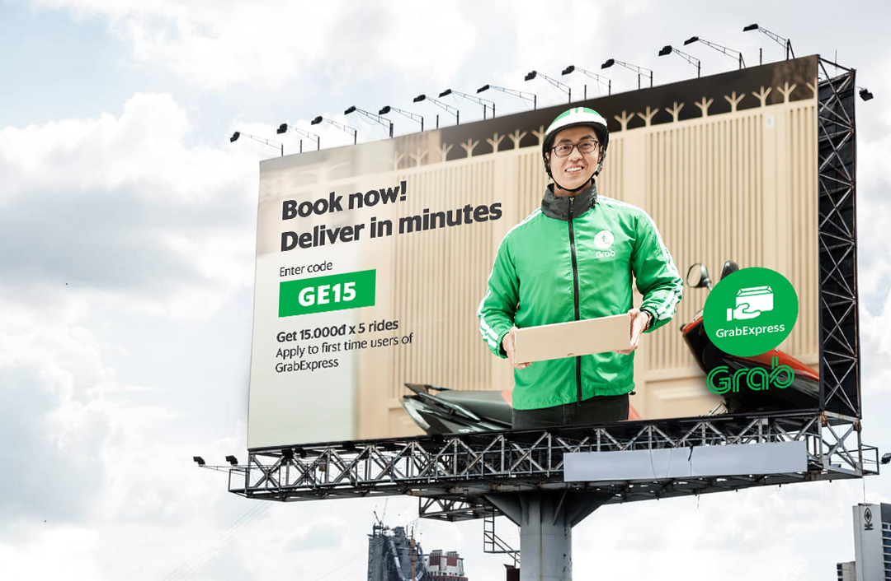

Visual design for Grab
At Grab, I was an in-house visual designer. I worked under an art director and communicated directly with the Marketing and Product teams to design digital and print graphic assets for promotional campaigns and in-house use.
The goal of the designs was to create cheerful but concise graphic works that catch customers' attention.
It was important to follow company brand guidelines to create fun and energetic works that reflect company culture and was cohesive with the overall branding and messaging.
Finalized designs were scaled to various sizes to fit across multiple social media and advertising platforms.
Tools: Illustrator, Photoshop, and After Effects

This work was for a customer acquisition promotion campaign when Grab launched their new product, GrabExpress, in the Vietnam market
Different design layouts for various advertising and social media platforms
 This standee design was for a rewards program which Grab partnered with CGV movie theater to offer exchanging Grab points for free movie tickets. The standees were widely placed in all CGV theater locations.
This flyer was for a Grabbike campaign, which aims to attract college students to become Grabbike users or and riders after school.
This backdrop design was for a partner meeting event in Hanoi, Vietnam. the size is 7x3.2 meters
Sticker design for Grab's Mid-Autumn festival celebration
Grab's handbook for Grabbike driver partners
This standee design was for a rewards program which Grab partnered with CGV movie theater to offer exchanging Grab points for free movie tickets. The standees were widely placed in all CGV theater locations.
This flyer was for a Grabbike campaign, which aims to attract college students to become Grabbike users or and riders after school.
This backdrop design was for a partner meeting event in Hanoi, Vietnam. the size is 7x3.2 meters
Sticker design for Grab's Mid-Autumn festival celebration
Grab's handbook for Grabbike driver partners
 A visual design for a fun interaction campaign which aimed to create connections between customers and Grab.
A visual design for a fun interaction campaign which aimed to create connections between customers and Grab.
 This visual design was for Grab’s new location operation campaign, which offered 10 free rides in Da Nang, Vietnam.
Dragon Bridge, a famous landmark of Da Nang, was used in the design so customers can easily identify where the promotion was happening.
This visual design was for Grab’s new location operation campaign, which offered 10 free rides in Da Nang, Vietnam.
Dragon Bridge, a famous landmark of Da Nang, was used in the design so customers can easily identify where the promotion was happening.
 This was a social media visual design for Grab’s new location operation campaign, which offered 10 free rides in Hanoi, Vietnam.
Hoan Kiem Lake, an icon of Hanoi, was used in the design so customers can easily identify where the promotion was happening.
This was a social media visual design for Grab’s new location operation campaign, which offered 10 free rides in Hanoi, Vietnam.
Hoan Kiem Lake, an icon of Hanoi, was used in the design so customers can easily identify where the promotion was happening.
 Another visual design used for Grab's expansion campaign in Hanoi.
Another visual design used for Grab's expansion campaign in Hanoi.